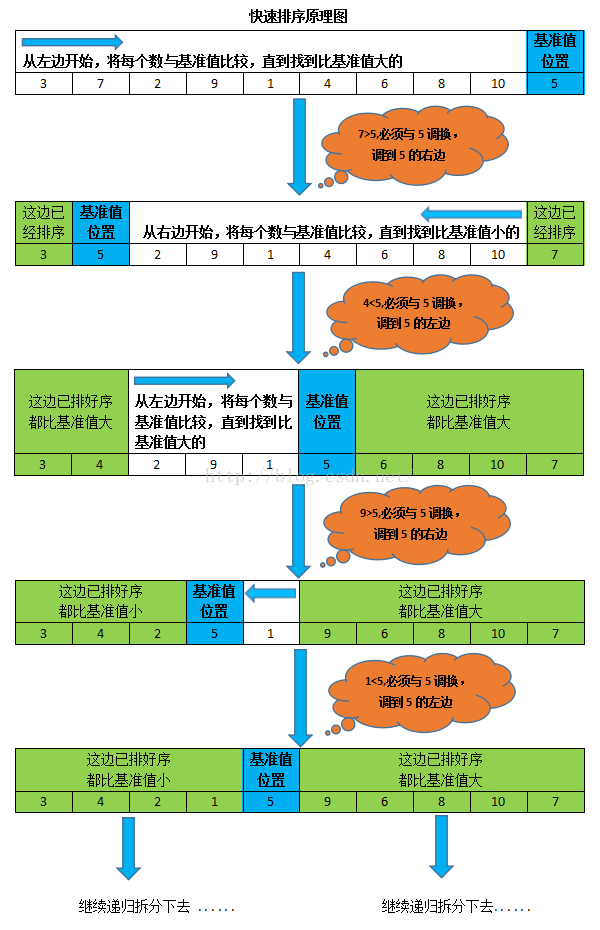

1. 常见的排序算法
| 排序方法 | 平均时间复杂度 | 最好 | 最坏 | 空间复杂度 | 稳定性 |
|---|---|---|---|---|---|
| 冒泡排序 | O(n²) | O(n) | O(n²) | O(1) | 稳定 |
| 简单选择排序 | O(n²) | O(n²) | O(n²) | O(1) | 不稳定 |
| 直接插入排序 | O(n²) | O(n) | O(n²) | O(1) | 稳定 |
| 希尔排序 | 受增量序列影响 | 受增量序列影响 | 受增量序列影响 | O(1) | 不稳定 |
| 快速排序 | O(nlogn) | O(nlogn) | O(n²) | O(logn)~O(n) | 不稳定 |
稳定性：排序前后两个相等的数相对位置不变，则算法稳定。
2. 冒泡排序
2.1 过程
假设有一个数组，放着无序的元素，我们要将元素从小到大排序。
- 从数组最后一个元素开始与前一个元素相比较，若比前一个元素小，则交换位置。
- 往前对每个相邻元素都进行这样比较、交换操作，最后最小的元素冒到了数组头部，成为有序部分，有序部分的元素在之后不被比较和交换。
- 重复前两步骤，直到全部元素有序。
2.2 Java代码实现
算法代码：
1 | /** |
测试代码：
1 | /** |
2.3 算法优化
可以设立flag，如果发生了交换flag设置为true，如果没有交换就设置为false。当一趟比较结束后如果flag仍为false，说明：这一趟没有发生交换，数组中的元素已经有序，没有必要继续进行下去。
优化后的算法代码：
1 | /** |
3. 简单选择排序
3.1 过程
假设有一个数组，放着无序的元素，我们要将元素从小到大排序。
- 第一个元素待定，在往后的元素中找出最小的元素，如果比第一个元素小，则交换。
- 第二个元素待定，在往后的元素中找出最小的元素，如果比第二个元素小，则交换。
- 依次进行下去，直到排序完成。
3.2 Java代码实现
算法代码：
1 | /** |
测试代码：
1 | /** |
4. 直接插入排序
4.1 过程
直接插入排序是插入排序的一种。
假设有一个数组，放着无序的元素，我们要将元素从小到大排序。
- 第一个元素已经排好序，认定为有序数组。
- 第二个元素插到前面的有序数组中的合适位置。
- 第三个元素插到前面的有序数组中的合适位置。
- 往后元素也依次插入有序数组的合适位置，直到整个数组有序。
4.2 Java代码实现
算法代码：
1 | /** |
测试代码：
1 | /** |
5. 希尔排序（Shell Sort）
5.1 过程
希尔排序也是插入排序一种。
假设有一个数组，放着无序的元素，我们要将元素从小到大排序。
- 设置第一个增量 = 数组长度 / 2，然后按增量分组，如数组{9， 2， 6， 3， 10， 5， 7， 11}，则第一个增量为4，则9、10为一组；2、5为一组；6、7为一组；3、11为一组。每组各自进行直接插入排序。
- 设置第二个增量 = 第一个增强 / 2，然后按增量分组，各组各自进行直接插入排序。
- 直到设置到增量 = 1，最后直接对整个数组进行直接插入排序。
希尔排序时间复杂度受增量序列的影响。
5.2 Java代码实现
算法代码：
1 | /** |
测试代码：
1 | /** |
5. 快速排序（Quick Sort）
5.1 过程
假设有一个数组，放着无序的元素，我们要将元素从小到大排序。
- 先选择一个元素设为枢轴（pivot），一般我们选择数组第一个元素。
- 先从最右往左遍历，直到遇到小于枢轴的元素，交换这个元素和枢轴元素的位置。
- 再从左往右遍历（交换过的位置和遍历过的位置都不再遍历），直到遇到大于等于枢轴的元素，交换这个元素和枢轴元素的位置。
- 重复以上两步骤，直到元素都被遍历。
- 继续划分枢轴左右两边的数组，继续递归以上操作。
可能你还是有点迷糊，请看下面一张图，胜过千言万语：
ps：以下图以数组最后一个元素设为枢轴，和我的操作稍微有点不同，但思想还是一样的。

5.2 Java代码实现
算法代码：
1 | /** |
测试代码:
1 | /** |